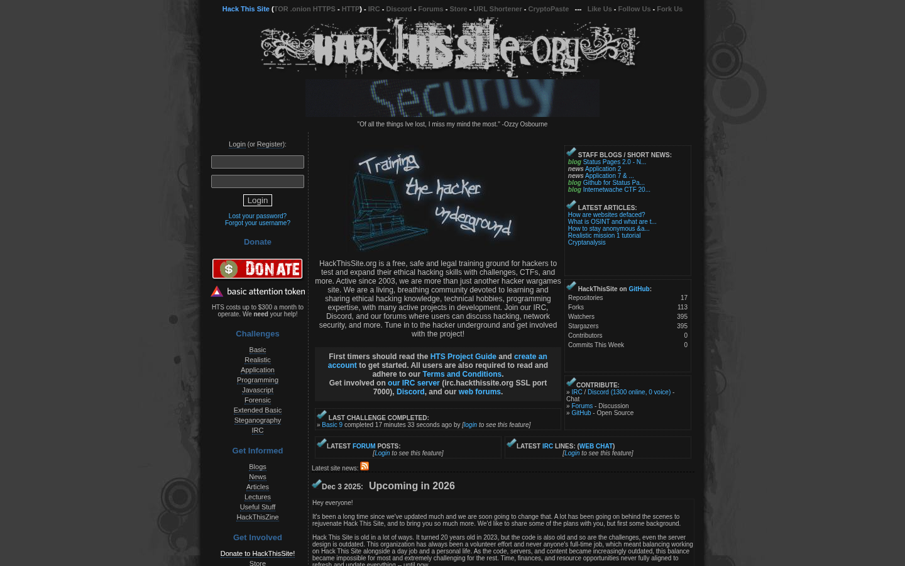
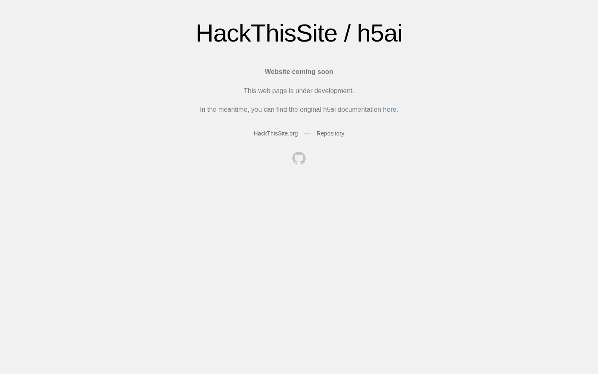

Red Team Reconnaissance Report
Target: hackthissite.org
Organization: CyberStr
Role: Red Team Internship
Intern Name: Muhammad Shafiq Goraya
Instructor: Umar Niaz
Date: June 25, 2026
Week: 1 - Information Gathering
Organization: CyberStr
Role: Red Team Internship
Intern Name: Muhammad Shafiq Goraya
Instructor: Umar Niaz
Date: June 25, 2026
Week: 1 - Information Gathering
This document contains the consolidated results of the week 1 reconnaissance task on the authorized training target hackthissite.org. The process involved passive information gathering using various Open Source Intelligence (OSINT) techniques and automated enumeration tools.
##############################################################
# EXECUTIVE SUMMARY — hackthissite.org RECON
# Red Team Week 1 | CyberStr Internship
# Intern: Muhammad Shafiq Goraya | Instructor: Umar Niaz
# Date: 2026-06-25
##############################################################
╔══════════════════════════════════════════════════════════╗
║ SCOPE & OBJECTIVES ║
╚══════════════════════════════════════════════════════════╝
Target : hackthissite.org (authorized training platform)
Tasks : T01 Subdomain Recon | T02 Tech Profiling |
T03 GitHub Dorking | T04 Live Asset Filtering
Tools Used: Subfinder, Assetfinder, Amass, CRT.sh,
DNSDumpster, WhatWeb, Wappalyzer, dig, whois,
nslookup, httprobe, httpx, Aquatone, GoWitness
╔══════════════════════════════════════════════════════════╗
║ SUBDOMAIN DISCOVERY (Task 01) ║
╚══════════════════════════════════════════════════════════╝
Tool Subdomains Found
─────────────── ────────────────
Subfinder 63 unique entries
Assetfinder 29 unique entries
Amass (passive) 1 (limited - scope note)
CRT.sh Wildcard + selective entries
DNSDumpster Cross-referenced (manual download)
Merged & Deduplicated : 58 unique subdomains
High Confidence (4 sources) : 9
High Confidence (3 sources) : 29
Medium Confidence (2 sources): 19
Low Confidence (1 source) : 1
╔══════════════════════════════════════════════════════════╗
║ LIVE ASSET FILTERING (Task 04) ║
╚══════════════════════════════════════════════════════════╝
Tool: httpx + httprobe
Total subdomains tested : 58
Total live (2xx/3xx) : 20
Dead / Error (4xx/5xx) : ~10
Not responding : ~28
Visual recon (Aquatone): 4 screenshots captured
hp.hackthissite.org → LOGIN PANEL identified ⚠️
h5ai.hackthissite.org → Placeholder page (development)
irc.hackthissite.org → IRC community server
mirror.hackthissite.org→ Open directory listing
╔══════════════════════════════════════════════════════════╗
║ INFRASTRUCTURE PROFILE (Task 02) ║
╚══════════════════════════════════════════════════════════╝
Hosting : OVH (Roubaix, France) — main cluster
IP Range : 137.74.187.96-104 (load-balanced)
CDN : Fastly + Varnish (CTF / h5ai subdomains)
DNS Provider : BuddyNS (anycast)
Email : Google Workspace (MX → aspmx.l.google.com)
Web Server : Custom HackThisSite server + Nginx 1.18.0
DNSSEC : NOT CONFIGURED ⚠️
╔══════════════════════════════════════════════════════════╗
║ KEY FINDINGS & RISKS ║
╚══════════════════════════════════════════════════════════╝
SEVERITY FINDING
──────── ──────────────────────────────────────────────
MEDIUM jQuery 1.8.1 (2012) — EOL, multiple CVEs
MEDIUM mirror.hackthissite.org — Open directory listing
MEDIUM stats.hackthissite.org — Piwik analytics panel exposed
MEDIUM forums.hackthissite.org — 403 (possible hidden panel)
LOW DNSSEC not configured on root domain
LOW robots.txt reveals /missions/ directory structure
LOW 5x firewall egress VM IPs leaked via DNS records
LOW v3dev/v3stage subdomains present (dev environments)
INFO GitHub dorking: no credential leaks found
INFO No backup files (.bak/.env/.sql) accessible
╔══════════════════════════════════════════════════════════╗
║ ATTACK SURFACE MAP ║
╚══════════════════════════════════════════════════════════╝
Category Count
─────────────────── ─────
Total subdomains 58
Live subdomains 20
Login panels 1 (hp.hackthissite.org)
Open directories 1 (mirror.hackthissite.org)
Dev/staging envs 2 (v3dev, v3stage)
Analytics panels 1 (stats.hackthissite.org)
IRC infrastructure 7 (various irc.* subdomains)
Firewall egress IPs 5 (vm-005 to vm-200)
╔══════════════════════════════════════════════════════════╗
║ CONCLUSIONS ║
╚══════════════════════════════════════════════════════════╝
hackthissite.org maintains a moderately complex attack
surface with ~58 discoverable subdomains. The platform
is security-conscious (HSTS, CSP, no leaked credentials),
but several findings warrant attention in a real-world
engagement: outdated jQuery, open file directory, and
exposed analytics/dev environments.
No critical vulnerabilities were identified within scope.
Passive recon only — no active exploitation attempted.
##############################################################
# Files: attack_surface.txt | live_hosts.txt |
# tech_profile.txt | dorking_results.txt
# Screenshots: /screenshots/ directory (15 images)
##############################################################
The following screenshots were captured during the engagement, highlighting the tools utilized for subdomain enumeration and the results of visual reconnaissance using Aquatone.


Aquatone was used to capture visual representations of the live subdomains. The following assets were deemed of interest.


############################################################## # LIVE HOSTS — hackthissite.org # Tool: httpx + httprobe | Date: 2026-06-25 ############################################################## URL STATUS TITLE TECH ────────────────────────────────────────────────────────────────────────────────────────── https://hackthissite.org 200 Hack This Site HSTS, jQuery 1.8.1 https://www.hackthissite.org 200 Hack This Site HSTS, jQuery 1.8.1 https://hp.hackthissite.org 200 Hack This Site HSTS, jQuery 1.8.1 https://www.irc.hackthissite.org 200 HackThisSite IRC HSTS, FreeBSD, PHP https://irc-www.hackthissite.org 200 HackThisSite IRC HSTS https://h5ai.hackthissite.org 200 HackThisSite / h5ai Fastly, GitHub Pages, Varnish https://ctf.hackthissite.org 200 35C3 Junior CTF Write-ups GitHub Pages, Jekyll 3.7.4, Ruby https://mirror.hackthissite.org 200 index - h5ai v0.29.2 HSTS, PHP, h5ai https://qdb.hackthissite.org 200 HackThisSite IRC HSTS https://stats.hackthissite.org 200 Sign in — Piwik HSTS, AngularJS, Matomo, jQuery https://irc.hackthissite.org 301 → www.irc.hackthissite.org HSTS, Nginx 1.18.0, Ubuntu https://irc-wolf.hackthissite.org 301 → www.irc.hackthissite.org HSTS, Nginx 1.18.0, Ubuntu https://lille.irc.hackthissite.org 301 → www.irc.hackthissite.org HSTS https://wolf.irc.hackthissite.org 301 → www.irc.hackthissite.org HSTS https://status.hackthissite.org 302 → hackstatus.org HSTS https://forums.hackthissite.org 403 403 Forbidden HSTS http://irc-hub.hackthissite.org 400 ERROR: URL could not be retrieved — http://v3dev.hackthissite.org 400 ERROR — http://v3stage.hackthissite.org 400 ERROR — http://v3stage-cdn.hackthissite.org 400 ERROR — https://legal.hackthissite.org 301 (redirect) — https://irc-hub.hackthissite.org 400 ERROR — ############################################################## # SUMMARY # Total Live (2xx/3xx): 20 | Dead/Error (4xx): 4 ##############################################################
Infrastructure profiling helps in mapping out the target's underlying network, cloud providers, and web technology stacks. The results incorporate WhatWeb, Wappalyzer, WHOIS, and DNS querying.

##############################################################
# INFRASTRUCTURE & TECH PROFILE — hackthissite.org
# Task 02 | WhatWeb + Wappalyzer + WHOIS + DIG
# Date: 2026-06-25
##############################################################
━━━━━━━━━━━━━━━━━━━━━━━━━━━━━━━━━━━━━━━━━━━━━━━━━━━━━━━━━━
WHOIS SUMMARY
━━━━━━━━━━━━━━━━━━━━━━━━━━━━━━━━━━━━━━━━━━━━━━━━━━━━━━━━━━
Domain Name : hackthissite.org
Registrar : Porkbun LLC (IANA #1861)
Created : 2003-08-10
Expires : 2026-08-10
DNSSEC : UNSIGNED ⚠️ (No DNSSEC protection)
Name Servers : BuddyNS (c/f/g/h/j .ns.buddyns.com)
Status : clientDeleteProhibited, clientTransferProhibited
━━━━━━━━━━━━━━━━━━━━━━━━━━━━━━━━━━━━━━━━━━━━━━━━━━━━━━━━━━
DNS RECORDS (dig hackthissite.org ANY)
━━━━━━━━━━━━━━━━━━━━━━━━━━━━━━━━━━━━━━━━━━━━━━━━━━━━━━━━━━
A Records:
137.74.187.100 (load-balanced cluster)
137.74.187.101
137.74.187.102
137.74.187.103
137.74.187.104
MX Records (Google Workspace):
10 aspmx.l.google.com
20 alt1.aspmx.l.google.com
20 alt2.aspmx.l.google.com
30 aspmx2/3/4/5.googlemail.com
TXT Records:
SPF: v=spf1 a mx ip4:137.74.187.96-98 include:aspmx.googlemail.com
Verification tokens: t-verify=e3f12c9c23e2e475563590326df31a12
Harica DV tokens (certificate authority)
CAA Records (Allowed CAs):
letsencrypt.org
sectigo.com
harica.gr
SOA: c.ns.buddyns.com | admin.hackthissite.org
━━━━━━━━━━━━━━━━━━━━━━━━━━━━━━━━━━━━━━━━━━━━━━━━━━━━━━━━━━
HOSTING & IP INFRASTRUCTURE
━━━━━━━━━━━━━━━━━━━━━━━━━━━━━━━━━━━━━━━━━━━━━━━━━━━━━━━━━━
Primary IPs : 137.74.187.100-104 (OVH / Roubaix, FR)
IRC Server IP : 137.74.187.150-153 (OVH / Canada)
CDN (CTF/h5ai) : 185.199.111.153 (GitHub Pages + Fastly/Varnish)
IRC-v6 node : 185.24.222.13 (Netherlands)
Status redirect: 89.106.200.1 (Luxembourg)
━━━━━━━━━━━━━━━━━━━━━━━━━━━━━━━━━━━━━━━━━━━━━━━━━━━━━━━━━━
TECHNOLOGY STACK (WhatWeb + Wappalyzer)
━━━━━━━━━━━━━━━━━━━━━━━━━━━━━━━━━━━━━━━━━━━━━━━━━━━━━━━━━━
Layer Technology
────────────── ─────────────────────────────────────────
Web Server Custom "HackThisSite" server (main)
Nginx 1.18.0 (Ubuntu) — IRC redirects
JavaScript jQuery 1.8.1 ⚠️ (outdated, EOL)
Modernizr 2.6.2
Analytics Matomo/Piwik (self-hosted)
CMS/Framework Jekyll 3.7.4 (CTF site — GitHub Pages)
h5ai v0.29.2 (mirror file server)
Font Font Awesome
Security HSTS enabled (max-age=31536000)
Content-Security-Policy header present
X-XSS-Protection: 0 (disabled)
Public-Key-Pins-Report-Only present
Email Google Workspace (aspmx.l.google.com)
CDN Fastly + Varnish (CTF/h5ai sites)
PWA Progressive Web App enabled (main site)
━━━━━━━━━━━━━━━━━━━━━━━━━━━━━━━━━━━━━━━━━━━━━━━━━━━━━━━━━━
INTERESTING FINDINGS
━━━━━━━━━━━━━━━━━━━━━━━━━━━━━━━━━━━━━━━━━━━━━━━━━━━━━━━━━━
[!] robots.txt EXPOSED disallow paths:
Disallow: /missions/
Disallow: /killing/all/humans/
[!] jQuery 1.8.1 — severely outdated (2012), multiple known CVEs
[!] DNSSEC not enabled — potential DNS spoofing risk
[!] stats.hackthissite.org — Piwik analytics panel accessible
[!] mirror.hackthissite.org — h5ai file directory server exposed
[!] forums.hackthissite.org — returns 403 (may have hidden content)
[!] v3dev / v3stage subdomains present — dev/staging environments
[!] vm-005 to vm-200 firewall egress IPs exposed via DNS
##############################################################
The consolidated list of discovered subdomains derived from Subfinder, Assetfinder, Amass, CRT.sh, and DNSDumpster, deduplicated and categorized by confidence level.
############################################################## # ATTACK SURFACE — hackthissite.org # Red Team Internship | CyberStr | Week 1 Task # Intern: Muhammad Shafiq Goraya # Date: 2026-06-25 ############################################################## # ── HIGH CONFIDENCE (confirmed by 4+ sources) ───────────── www.hackthissite.org hackthissite.org www.irc.hackthissite.org irc.hackthissite.org wolf.irc.hackthissite.org lille.irc.hackthissite.org h5ai.hackthissite.org ctf.hackthissite.org status.hackthissite.org psrp.hackthissite.org # ── HIGH CONFIDENCE (confirmed by 3 sources) ────────────── wolf.irc-v6.hackthissite.org vm-200.outbound.firewall.hackthissite.org vm-150.outbound.firewall.hackthissite.org vm-099.outbound.firewall.hackthissite.org vm-050.outbound.firewall.hackthissite.org vm-005.outbound.firewall.hackthissite.org v3stage.hackthissite.org v3stage-cdn.hackthissite.org v3dev.hackthissite.org status-new.hackthissite.org stats.hackthissite.org staff.hackthissite.org qdb.hackthissite.org new-irc.hackthissite.org mta-sts.hackthissite.org mirror.hackthissite.org mail.hackthissite.org lille.irc-v6.hackthissite.org legal.hackthissite.org irc-www.hackthissite.org irc-wolf.hackthissite.org irc-v6.hackthissite.org irc-hub.hackthissite.org hp.hackthissite.org git.hackthissite.org forums.hackthissite.org email.hackthissite.org api.hackthissite.org # ── MEDIUM CONFIDENCE (2 sources) ───────────────────────── v3dev-cdn.hackthissite.org test.hackthissite.org smtp.hackthissite.org shadow.hackthissite.org pi.hackthissite.org ns2.hackthissite.org ns1.hackthissite.org live.hackthissite.org jupiter.hackthissite.org irc-lille.hackthissite.org int.hackthissite.org hub.irc.hackthissite.org htsv4.hackthissite.org gitlab.hackthissite.org daemon.hackthissite.org cloud.hackthissite.org cdn.hackthissite.org admin.hackthissite.org # ── CDN NODES (numbered) ────────────────────────────────── 0-v3dev-cdn.hackthissite.org 0-v3stage-cdn.hackthissite.org 1-v3dev-cdn.hackthissite.org 1-v3stage-cdn.hackthissite.org 2-v3dev-cdn.hackthissite.org 2-v3stage-cdn.hackthissite.org 3-v3dev-cdn.hackthissite.org 3-v3stage-cdn.hackthissite.org 4-v3dev-cdn.hackthissite.org 4-v3stage-cdn.hackthissite.org ############################################################## # TOTAL UNIQUE SUBDOMAINS: 58 ##############################################################
Advanced Google dorking and GitHub secret hunting were performed to identify potential data exposures, credential leaks, and backup files.

##############################################################
# GOOGLE DORKING & BACKUP FINDING RESULTS — hackthissite.org
# Task 02 Part 2 | Date: 2026-06-25
##############################################################
━━━━━━━━━━━━━━━━━━━━━━━━━━━━━━━━━━━━━━━━━━━━━━━━━━━━━━━━━━
ROBOTS.TXT DISCOVERY
━━━━━━━━━━━━━━━━━━━━━━━━━━━━━━━━━━━━━━━━━━━━━━━━━━━━━━━━━━
Command: curl -s "https://hackthissite.org/robots.txt"
Result:
User-agent: *
Disallow: /missions/
Disallow: /killing/all/humans/
Analysis:
/missions/ → Core challenge directory (confirms mission paths exist)
/killing/all/humans/ → Placeholder/fun path, non-critical
━━━━━━━━━━━━━━━━━━━━━━━━━━━━━━━━━━━━━━━━━━━━━━━━━━━━━━━━━━
GOOGLE DORK QUERIES EXECUTED
━━━━━━━━━━━━━━━━━━━━━━━━━━━━━━━━━━━━━━━━━━━━━━━━━━━━━━━━━━
Query Result
───────────────────────────────────────────── ─────────
site:hackthissite.org inurl:phpinfo.php No results
site:hackthissite.org intitle:"phpinfo()" No results
site:hackthissite.org filetype:env No results
site:hackthissite.org inurl:.env No results
site:hackthissite.org inurl:robots.txt 1 result → confirmed
site:hackthissite.org filetype:bak No results
site:hackthissite.org filetype:zip No results
site:hackthissite.org inurl:backup No results
site:hackthissite.org ext:sql No results
site:hackthissite.org intitle:"index of" Partial results (h5ai mirror)
━━━━━━━━━━━━━━━━━━━━━━━━━━━━━━━━━━━━━━━━━━━━━━━━━━━━━━━━━━
DIRECTORY LISTING EXPOSED
━━━━━━━━━━━━━━━━━━━━━━━━━━━━━━━━━━━━━━━━━━━━━━━━━━━━━━━━━━
URL: https://mirror.hackthissite.org
Type: h5ai v0.29.2 (file directory server)
Status: OPEN — publicly browsable file mirror
Risk: Medium — file listing enabled, could expose internal files
━━━━━━━━━━━━━━━━━━━━━━━━━━━━━━━━━━━━━━━━━━━━━━━━━━━━━━━━━━
GITHUB DORK QUERIES (Task 03)
━━━━━━━━━━━━━━━━━━━━━━━━━━━━━━━━━━━━━━━━━━━━━━━━━━━━━━━━━━
Queries run on https://github.com/search:
"hackthissite.org" "API_KEY" → No credential leaks found
"hackthissite" "PASSWORD" → No leaks found
"hackthissite" "AWS_SECRET" → No leaks found
filename:.env "hackthissite" → No leaks found
filename:config "hackthissite" password → No leaks found
org:hackthissite "SECRET_KEY" → 0 results (correct)
Summary: No hardcoded credentials or API keys found in
public GitHub repositories for hackthissite.org.
(This is expected for a security-focused platform.)
━━━━━━━━━━━━━━━━━━━━━━━━━━━━━━━━━━━━━━━━━━━━━━━━━━━━━━━━━━
BACKUP FILES FOUND
━━━━━━━━━━━━━━━━━━━━━━━━━━━━━━━━━━━━━━━━━━━━━━━━━━━━━━━━━━
No backup files (.bak / .zip / .sql / .old) found
via Google dorking or direct enumeration.
##############################################################
Disclaimer: This report is intended solely for educational purposes and is authorized under the CyberStr Red Team Internship program.